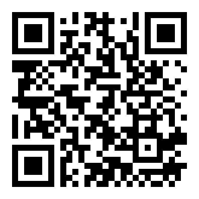

กด เริ่มนับถอยหลัง แล้วรีบไปกดไอคอน extension → เริ่มมอนิเตอร์แท็บนี้
พอครบเวลา QR จะโผล่ขึ้นมาเอง เหมือนตอนวิทยากรกดสไลด์
อยากทดสอบว่าจับ QR เล็ก ๆ ได้ไหม ให้ลากแถบ “ขนาด” ลงมาเหลือ 60–80px
กด สลับ QR ไปอันที่ 3 (lin.ee) เพื่อทดสอบ blacklist — อันนั้นต้องไม่เตือน

https://forms.gle/MagpieTestA — ควรเตือน